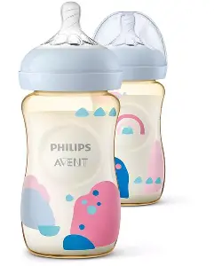
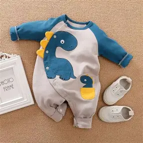

Perlengkapan untuk si kecil di tahun pertamanya
| No | Foto | Nama Produk | Harga | Deskripsi |
|---|---|---|---|---|
| 1 |  |
Botol Susu | Rp 70.000 - 170.000 | Botol minum bayi berkualitas tinggi yang dirancang khusus untuk kenyamanan si kecil saat menyusu. Terbuat dari bahan BPA Free, aman digunakan sehari-hari, dengan dot silikon lembut anti kolik yang membantu mengurangi risiko bayi kembung. Desain botol ergonomis, mudah digenggam, serta tersedia dalam berbagai ukuran dan warna menarik. Tersedia dari berbagai ukuran |
| 2 | |
Bak Mandi Bayi Lipat | Rp 100.000 - 150.000 | Bak mandi portable, bisa dilipat, dilengkapi sandaran kepala yang lembut. Material food grade, aman untuk bayi dan sangat cocok dibawa pergi pergi. |
| 3 |  |
Baju Bayi Newborn Set | Rp 100.000 - 120.000 | Baju bayi nyaman dengan bahan katun premium yang lembut, adem, dan menyerap keringat sehingga aman untuk kulit sensitif bayi. Hadir dengan berbagai model lucu dan warna menarik yang membuat si kecil tampil lebih menggemaskan. Jahitan rapi dan nyaman dipakai untuk aktivitas sehari-hari maupun tidur. |
| 4 | |
Kasur Bayi Portable | Rp 180.000 - 400.000 | Kasur portable bayi yang empuk, ringan, dan mudah dibawa bepergian. Didesain dengan bahan berkualitas yang nyaman untuk tidur bayi kapan saja dan di mana saja. Praktis dilipat dan mudah disimpan, cocok untuk digunakan di rumah, saat berlibur, maupun saat mengunjungi keluarga. |
| 5 | Paket Sabun & Shampo Bayi | Rp 20.000 – Rp60.000 | Paket sabun dan shampo bayi dengan formula lembut yang aman untuk kulit sensitif si kecil. Membersihkan tubuh dan rambut bayi secara maksimal tanpa membuat kulit kering atau iritasi. Memiliki aroma lembut dan kemasan praktis yang memudahkan orang tua dalam perawatan harian bayi. |